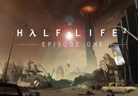
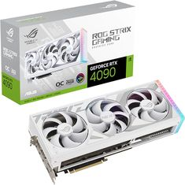
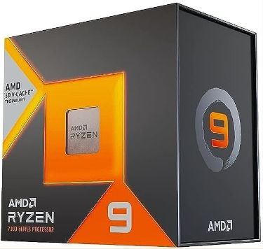

¿Sale nuevo Half Life?
Rumores recientes han reavivado la esperanza de los fans: ¿está Valve preparando un nuevo capítulo de Half-Life? Tras el éxito crítico de Half-Life: Alyx, la comunidad espera ansiosa un nuevo título principal. Aunque no hay confirmación oficial, diversas filtraciones y declaraciones ambiguas de desarrolladores sugieren que algo se está cocinando. ¿Será finalmente el tan esperado Half-Life 3? Estaremos atentos a cada pista.

NVIDIA RTX 4090: potencia sin límites
La nueva tarjeta gráfica NVIDIA GeForce RTX 4090 marca un antes y un después en el rendimiento gráfico. Con arquitectura Ada Lovelace y 24GB de memoria GDDR6X, es capaz de correr juegos en 4K con Ray Tracing activado y altas tasas de FPS. Además, su capacidad para tareas de IA y renderizado 3D la hace ideal para profesionales. Una bestia pensada no solo para gamers exigentes, sino también para creadores de contenido.

Nuevo Ryzen: revolución en CPU
AMD ha lanzado su nueva línea de procesadores Ryzen, fabricados con tecnología de 5nm y arquitectura Zen 4. Estos CPUs ofrecen mejoras significativas en rendimiento multitarea, eficiencia energética y velocidades de reloj. El modelo Ryzen 9 7950X, por ejemplo, supera en benchmarks a varios de sus competidores directos, posicionando a AMD nuevamente como líder en innovación. Perfectos para gaming, edición y desarrollo.
Half Life: ¿vuelve una leyenda del gaming?
La franquicia Half-Life sigue siendo uno de los pilares de los videojuegos narrativos. Si bien Valve ha sido históricamente reservada con sus lanzamientos, en las últimas semanas han aparecido registros de patentes y movimientos internos que apuntan a un proyecto en desarrollo. La comunidad sueña con un regreso que podría redefinir el género shooter una vez más.
RTX 4090: análisis técnico y benchmarks
Más allá del marketing, la RTX 4090 ha sido puesta a prueba en distintos escenarios. Su rendimiento supera con creces a la generación anterior, y sus capacidades con DLSS 3.0 permiten jugar títulos exigentes como Cyberpunk 2077 en calidad ultra sin caídas de rendimiento. Sin duda, es la GPU más potente disponible en el mercado para consumidores actualmente.
Procesadores Ryzen: el futuro de la informática
AMD no solo apunta al gaming, sino también a profesionales que buscan eficiencia en entornos de desarrollo, ciencia de datos y producción audiovisual. Su nueva línea Ryzen logra combinar potencia y sostenibilidad, reduciendo el consumo energético sin sacrificar rendimiento. Ideal para estaciones de trabajo modernas.